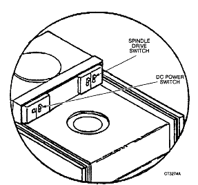

Operating Documentation
Direction 5112972-800, Rev# 2
CT Planned Maintenance Procedures
Operating Documentation |
| Required Persons | Preliminary Reqs | Procedure | Finalization |
|---|---|---|---|
| 1 | Timing Not Applicable | 10 mins | Timing Not Applicable |
Procedure Effectivity:
| Assembly: | ZEBRA DISKS |
| Subassembly: | |
| Purpose: | Check Fans |
| Last Revised: | July 1995 |
| Item | Qty | Effectivity | Part# | Manufacturer | |
|---|---|---|---|---|---|
| Standard FE Toolkit | 1 | - | - | - | |
| Item | Qty | Effectivity | Part# | Manufacturer |
|---|---|---|---|---|
| Ty-Wrap | 1 | - | - | - |
| Flashlight | 1 | - | - | - |
Boot down the system - cancel to “R" - then type release DZ0<CR>. You should get the “!" prompt.
Turn off the spindle drive on each disk drive (you may have one or two drives). See Illustration 1.
Illustration 1: Spindle Drives

Leave DC power on to power the fans.
Remove the front cover and the right side cover. Front cover has two screws that twist CCW and are spring loaded to snap out. Side cover lifts up and out - off of it's guide pins.
Locate the two peewee boxer fans under the two circuit boards - front right of drive.
Carefully stick a Ty-wrap or rolled up piece of paper into these fans to check if they are spinning.
Locate the power chassis fan. It is located towards the back left while looking in through the front.
Shine a flashlight into the fan to see if it is spinning or reach in and stick a Ty-wrap into it.
No finalization required.